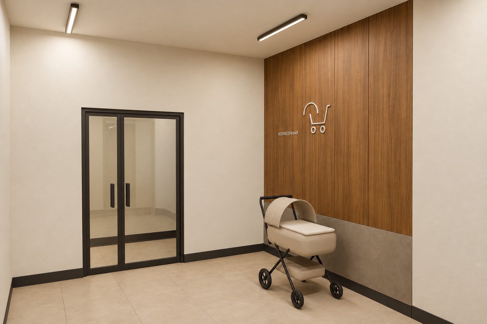
00a
Текущий дизайн с деревом в более детальной подаче и десять альтернатив: пять с деревом, пять с гибким мрамором и золотистыми вставками.
Эскизы для обсуждения и правок. Материалы, бюджет и сроки пока не утверждены. Вид логотипа и его размещение предстоит согласовать.
Три интерьерных ракурса. Акцент на фактуре, свете, швах и примыканиях.

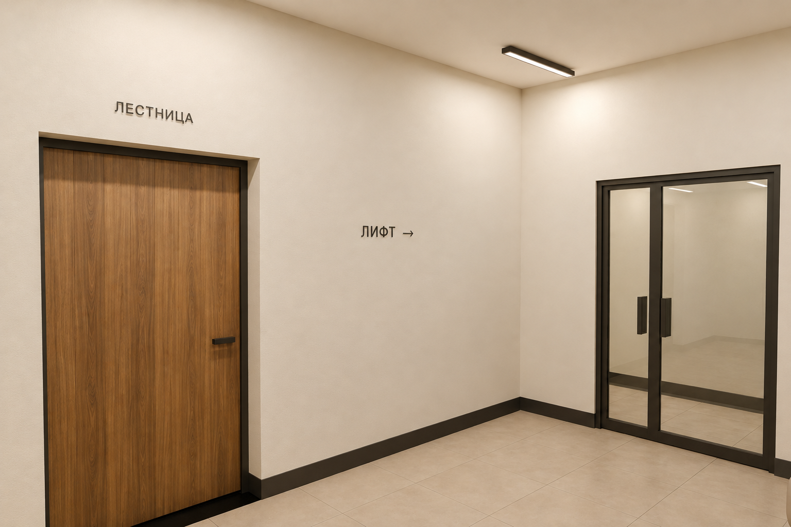
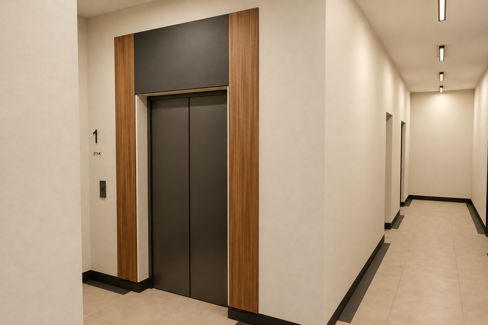
Один исходный ракурс во всех вариантах для сравнения отделки.
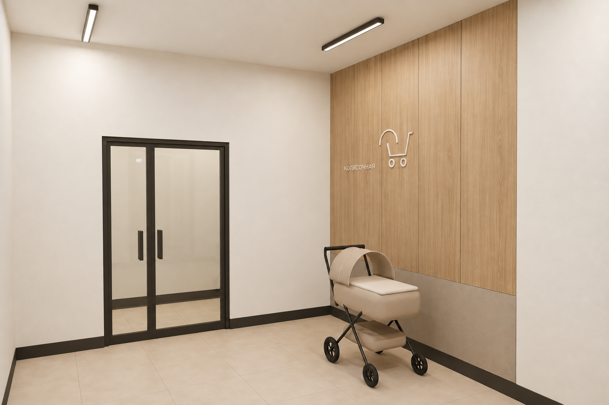
Светлый дуб, молочные стены, светлый камень; мягкая спокойная подача.
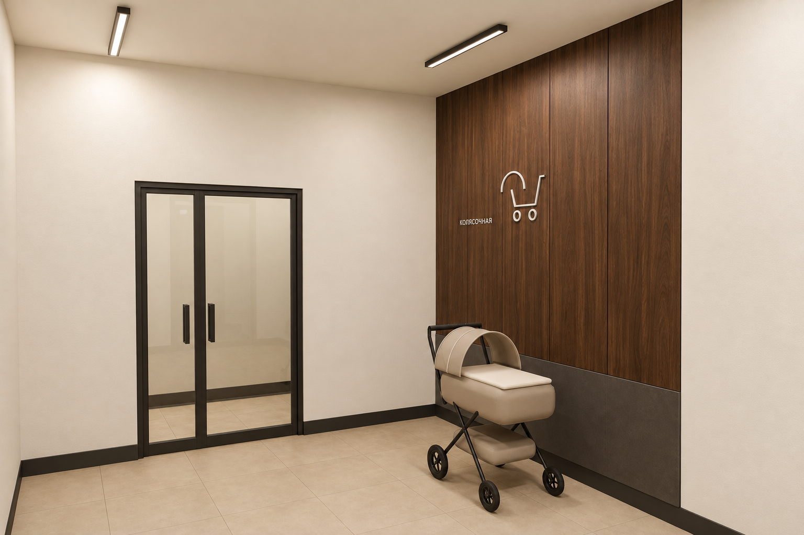
Тёмный орех, графитовая защита стены, светлые стены; выраженный контраст.
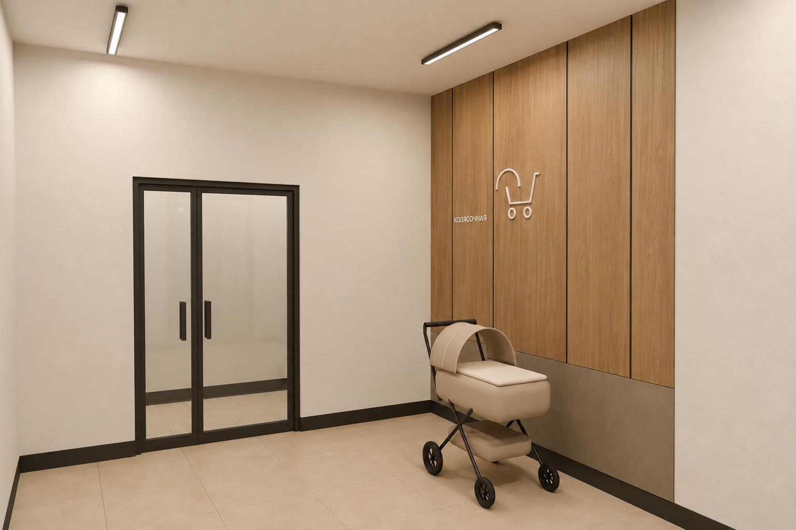
Дубовые панели разной ширины с тонкими тёмными швами; более собранная композиция.
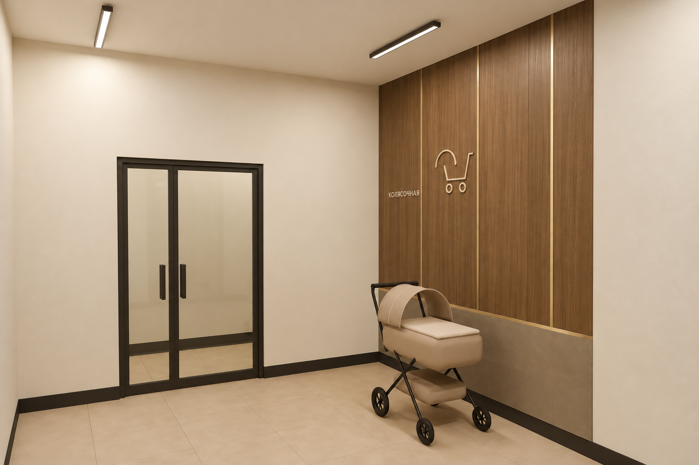
Дымчатый дуб и несколько тонких вставок цвета шампань; переход к пожеланиям Магомеда.
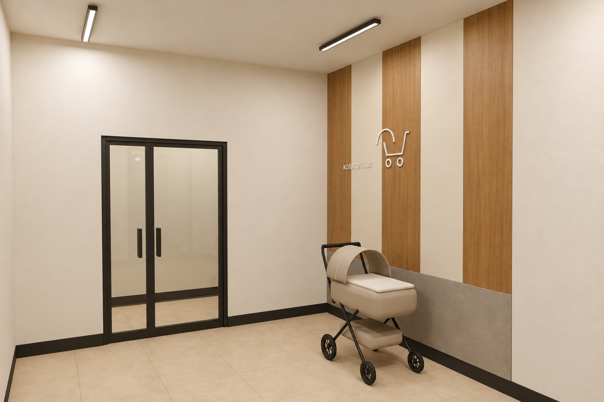
Широкие древесные полосы чередуются с молочными панелями; меньше дерева в кадре.
Тонкая декоративная облицовка с рисунком мрамора и сдержанные золотистые профили. Изделия пока не подобраны.
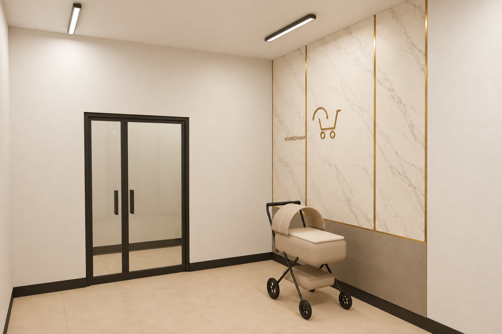
Светлый рисунок мрамора и тонкие золотистые вставки; самый прямой ответ на запрос.
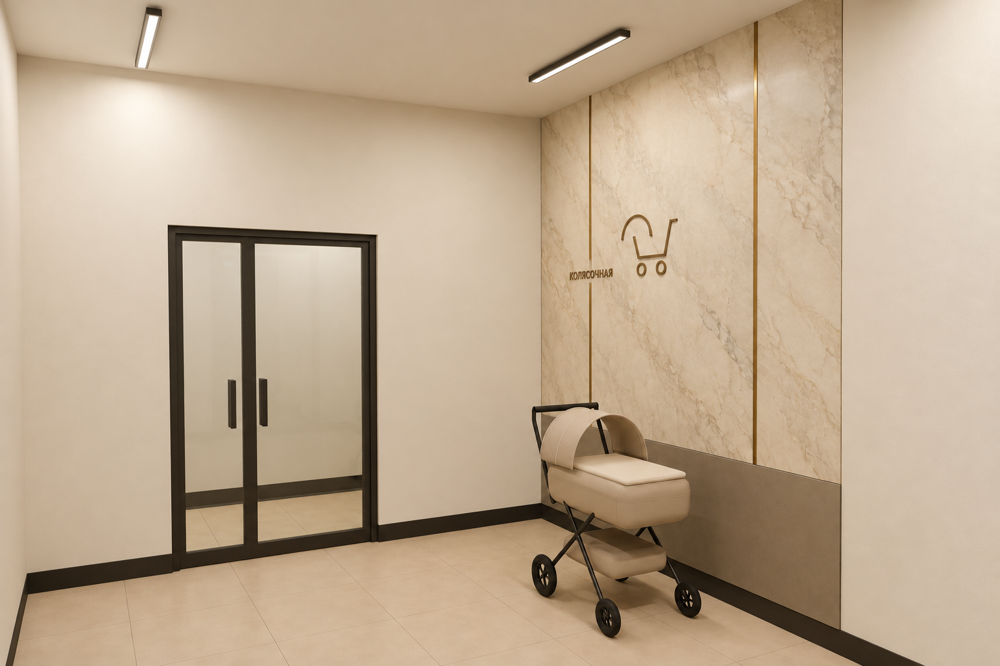
Кремово-бежевый мраморный рисунок, тёплое золото и тауп; близко к прежней тёплой гамме.
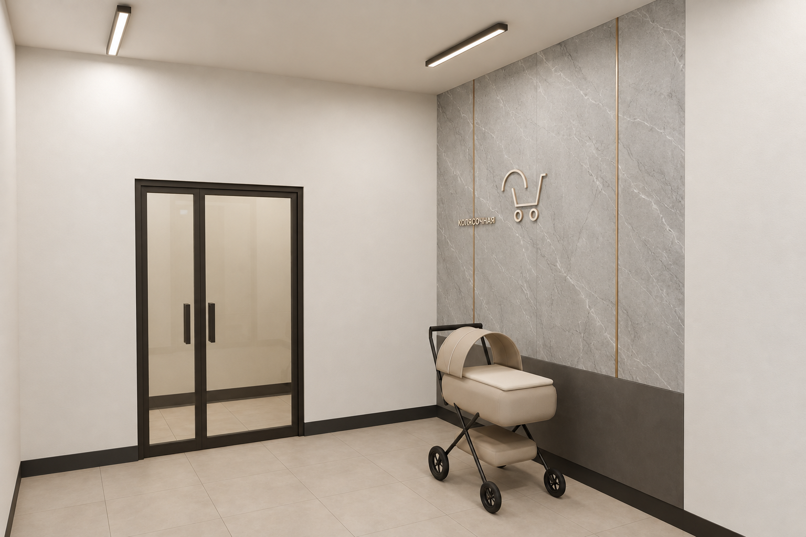
Серо-белый рисунок, графитовая нижняя зона и минимум шампани; строгий вариант.
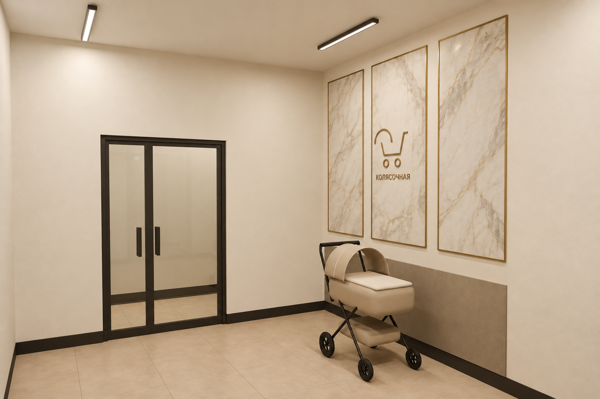
Три отдельных мраморных панно в тонких золотистых рамках на молочном фоне; более парадная подача.
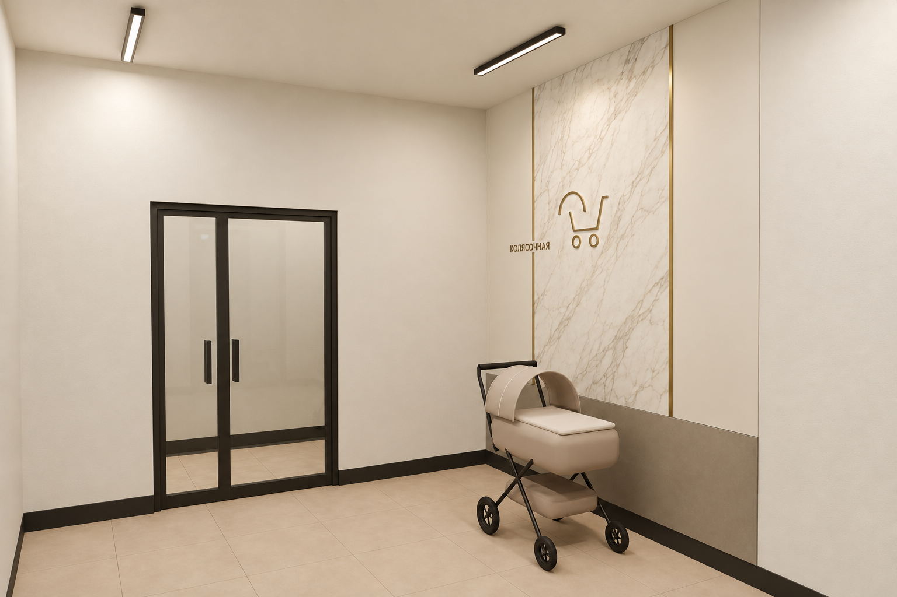
Мрамор только в центральной части стены, остальное молочное; сдержанное применение материала.
Референсы из комплекта section-1-aligned-doors.